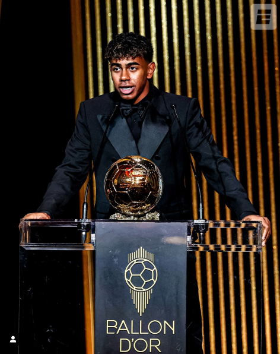

Lamine Yamal –
(2024/25 – FC Barcelona)
- Mérkőzések száma: 50
- Gólok: 15
- Gólpasszok: 21
- Lejátszott percek: 4465 perc
- Sárga lapok: 3
- Piros lapok: 0
- Átlagos játékidő: ~89 perc/mérkőzés
- Passzpontosság (BL-ben): 79%
- Legnagyobb sebesség (BL-ben): 32,18 km/h
- Legutóbbi BL-mérkőzés értékelése: 8,4 (Inter Milan ellen)
La Liga
- Mérkőzések: 31
- Gólok: 6
- Gólpasszok: 12
- Lejátszott percek: 2504 perc
Bajnokok Ligája
- Mérkőzések: 12
- Gólpasszok: 3
- Lejátszott percek: 981 perc
